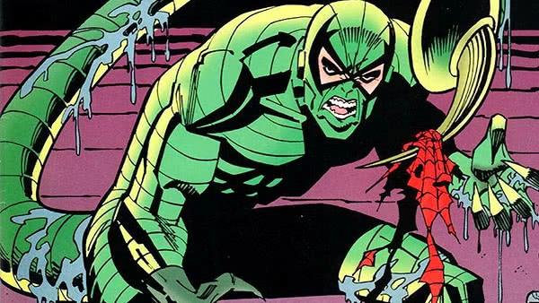

Adaptações
Relacionadas a alimentação:
Para capturar o alimento os escorpiões
permanecem em posição de espera ou seja mantém as pinças dos seus pedipalpos abertas e aguardam a passagem da presa. Então eles capturam a presa e
paralisam-na por meio da inoculação do veneno armazenado em seu ferrão, paralisada essa pressa é alojada na cavidade pré-oral onde começa o processo de digestão.
Inicialmente, esse processo é
extra-corporal, sendo o alimento umedecido e degradado por enzimas digestivas regurgitadas pelo próprio animal. Quando o alimento está na forma líquida, é sugado para dentro do intestino onde ocorre a digestão apropriadamente.
Os escorpiões são
exclusivamente carnívoros e alimentam-se de invertebrados como cupins,grilos,baratas sendo suas preferidas, moscas,mutucas e pequenas aranhas. Porém na escassez de comida ou elevada densidade populacional
já se observou o canibalismo em algumas espécies.
Curiosidade: Mais de 90% do tempo, esses escorpiões permanecem em repouso, com baixo metabolismo, e podem sobreviver pouco mais de um ano sem comer. Além disso, quando se alimentam podem aumentar seu peso inicial em aproximadamente um terço.
Relacionadas a defesa:
Escorpiões utilizam de picadas venenosas utilizando seu telson (peça quitinosa do exoesqueleto dos artrópodes que no caso dos escorpiões armazenam um veneno poderoso) e ataques com suas pinças. Também utilizam da autotomia que é a capacidade de soltar partes de seu corpo , automutilando-se.
Reprodução
A fêmea é
vivípara, ou seja, os filhotes desenvolvem-se dentro da mãe. alguns escorpiões reproduzem-se
assexuadamente por partenogênese, em que os óvulos se desenvolvem diretamente em embriões, sem serem fecundados por um macho, como ocorre por exemplo na espécie do
T. Stigmurus (escorpião preto) as quais geram novas fêmeas. O mês de agosto é a época de reprodução dos escorpiões , pois é o período em que as fêmeas têm a maior concentração de veneno.
O desenvolvimento embrionário pode ser de dois tipos:
apoicogênico, ocorrendo ao longo de túbulos ovarianos, com oócitos ricos em vitelo e
caitocogênicos, com o desenvolvimento embrionário ocorrendo em divertículos e os oócitos pobres em vitelo.
comportamento de corte:
❝Para reprodução, o macho prende a fêmea em seus pedipalpos e realiza um ritual de corte, que consiste em arrastá-la e balançá-la por todos os lados até a liberação (no solo) de um tubo contendo esperma, denominado espermatóforo. Após essas ações, a fêmea se posiciona neste, penetrando em seu opérculo genital. Em algumas espécies, como o escorpião amarelo, há reprodução por paternogênese.❞
https://brasilescola.uol.com.br/biologia/acasalamento-escorpioes-aranhas.htm
Inspiração

-
O personagem Scorpion do jogo Mortal Kombat tem seus ataques inspirados nos de um escorpião!